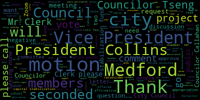
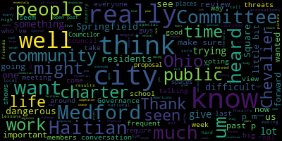
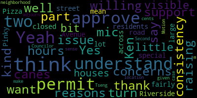
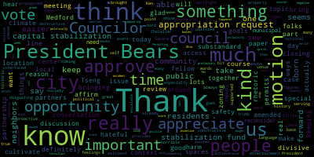
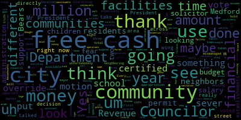

[Bears]: 17 2024 Medford City Council, Mr. Clerk, please call the roll. Announcements, accolades, remembrances, reports and records 24469 offered by Councilor Tseng. Be it resolved that the City Council celebrate the importance of the Chevalier Theatre and commend the friends of Chevalier and Dream Act Gym for their hard work in securing, ensuring the success of the theatre, Councilor Tseng.
[Tseng]: Thank you so much. In many ways, the Chevalier is the life blood of Medford Square. It is the beating heart of our square. We see when on nights where there are shows at the Chevalier, how many people come into Medford Square, frequent our businesses, frequent our up-and-coming bars seen here as well. I think, you know, it's easy to see that success and see something that we're so proud of and, you know, forget about all the hard work that goes into making it what it is. We heard last week about a little bit about a lot of the hard work that volunteers have put in to making sure this Chevalier runs the way it does. And we heard a little bit a tiny glimpse into some of the other work being done by the Friends of Chivalry Theater and Gene Knack Gym, including youth programming and using the old high school gym to provide, you know, much needed after school care in the city. I don't want to be, you know, I don't want beat the horse around because we have a very special guest in the audience, who I am sure can tell you and tell our residents so much more about the Chevalier Theatre and all the work that the Friends of the Chevalier Theatre do, and to present it much more eloquently than I can.
[Bears]: Any further questions or statements from members of the Council? Seeing none, I will recognize Mr. Krause. Ken, how are you? Name and address for the record, please. You have three minutes.
[Leming]: Ken, can you turn the mic on?
[Krause]: Is that better? Is that green lights on now? Okay, sorry, Ken Krause, 50 Mystic Street, board member of the Friends of Chevalier and GMAC Gym and the Chevalier Theatre Organ Society. Thank you for the resolution, Councilor Sagan, for your interest and attention last week when Cindy Watson from the Friends addressed you. I just wanted to offer a little bit more information, a brief history about Chevalier Complex. It was built in 1939 as a WPA project as an addition to Medford High School. It served the school well until 1965 when there was a major fire and most of the fire was contained in the northwest end of the complex, the gym and the theater on the south end. But at that point, the city decided to build a new high school in 1970 and sell off the part of the school that was salvageable. When that was proposed, the Gene Mack Gym and the Shibari Theater were part of the sale, and citizens came before the council and persuaded them to sever the sale of the theater and the gym at that time. In its wisdom, the city saved it, but unfortunately for the next 20 years or so, it was sort of abandoned and neglected and fell into serious disrepair. So in the mid 80s, the city leaders and the Chevalier Commission was established, the Mystic Players, a low-refuted troop group, and the Friends of Chevalier all rallied together to get the theater and the gym rehab so they could both open in the early 1990s. It continued to languish and more or less used occasionally, particularly on the theater side, until seven years ago when the city hired Bill Blumenreich Presents to manage and operate and book the theater on a regular basis, and we've seen the results of that relationship since. The number of shows at the theater right now averages about 80. The year before Bill Blumenreich took over, there were 13, and three of those were in the on-stage series, which only used the stage for the performers and the audience. So it's been a really successful partnership. Also in 2019, the Metro Recreation Center, the department moved into the gym and their operations are amazing. If you look at their programming on their website, they offer everything from sensory art to archery for all ages and all abilities, seven days a week. So Kevin Bailey and his team are doing a fabulous job. And then the Medford Youth Center operation, which is primarily an afterschool and summer camp program, is run by the Mystic Valley YMCA for the city. And they serve 100 kids a day, Medford youth, a day after school, and they do a terrific job there as well. Sometimes there's misconceptions about what's going on in the building, so I just wanted to offer that. Ken, you have about 30 seconds. Okay, so as Cindy pointed out, we have a great asset here and I appreciate the council's support and recognition of it as we continue to improve it. There are some improvements that are underway that you'll see soon. And for anybody else who might be interested, Mystic River celebration this Saturday, both the friends and the Oregon Society will have a table there. So if anybody's gonna attend, that's noon to four at the continent show, please stop by and talk to us and get some more information. Thank you.
[Bears]: Thank you, Ken. Any further questions or comments by members of the council? Council Vice President Collins.
[Collins]: Thank you, President Bears. Ken, just want to thank you so much for once again coming before the council to, you know, for folks who don't already know some of that history and context about the Chevalier, and for folks who know a little bit, maybe know it as an event venue, but haven't interfaced with what a community center it is and how much good it provides, not just as an entertainment center in Medford Square, but as a historic piece of property that's utilized by so many types of people. in our community with our neighbors. I think it's always great to shine a spotlight on that, and thank you so much for your work.
[Bears]: Thank you, Vice President Collins. On the motion of councilor saying seconded by. Seconded by Vice President Collins. Mr. Clerk, please call the roll.
[Bears]: Yes. Yes, I mean, from what I've read, negative, the motion passes. Councilor Tseng offered a resolution under suspension. Is there a motion to suspend the rules? On the motion of Vice President Collins, seconded by Councilor Calderon to suspend the rules to take paper 24471, offered under suspension by Councilor Tseng. Mr. Clerk, please call the roll. 24471.
[Hurtubise]: Yes. Yes. Yes. Yes.
[Bears]: Councilor San Buenaventura? Yes. President Fierce? Yes. I have a negative. The motion passes. 24471 offered under suspension by Councilor Tseng. Be it resolved that the City of Medford stands in unconditional support of our Haitian brothers and sisters and of all immigrants who are part of this community wherever they may come from. We are grateful for the skills, energy, and vibrancy they bring to Medford at this time when hateful and divisive rhetoric is being promulgated by highly visible people on the national level we believe that it is important to restate our commitment to all residents in our city, all residents of our city. Councilor Tseng.
[Tseng]: Thank you. You know, this is such a grave matter. facing, you know, I think this is one of the examples where something national can really have local impacts on the national conversation that we've been having about immigration about race about, you know, about acceptance and inclusion does have local results and we see that in Springfield, Ohio, and you know, well Springfield, Ohio is not meant for Massachusetts. The lessons that Springfield imports to us, I think, are real lessons for Medford and a real wake-up call for municipalities around the country. There's been really wild, extreme accusations being launched against Haitian migrants who've moved to Ohio who've moved to Springfield, Ohio, in search of work and a life away from, you know, difficult and dangerous living situations back in Haiti. This is a story I think that Haitian Americans here in Medford relate to and know a lot about. And what's been said has You know, the accusations being launched have been really difficult and led to really dangerous outcomes for people just trying to live a normal life in the ground. We've seen that schools have been canceled because of bomb threats and because of threats against Haitian students, against kindergartners trying to go to picture day. We've seen the windows of cars, of homes of Haitian immigrants in Ohio being smashed, and we've seen both the dangerous rhetoric but dangerous results spread outside of Ohio as well. The Haitian community is so important to Medford. It's so important to all of us. I couldn't imagine our city without that. And I think this is, the last few weeks have been a particularly difficult time for Haitian Americans and Haitian Medford residents as well. And I wanted them to know that we stand with them as well. It's a difficult subject for me to speak about because the racist tropes that have been peddled which I don't want to repeat, have been things that I've heard growing up here as well. And, you know, to people, it might seem like a joke, and it might seem like, you know, something that they've heard from someone else before, or something that just seems funny to say about someone, but I think this serves as a constant reminder that jokes and insensitive rhetoric can lead to real threats to personal safety, to people just trying to live their everyday life, to contribute to our society, to give to our country. And it's important for us to stand up for all of our residents.
[Bears]: Thank you, Councilor Tseng. Councilor Lazzaro, Vice President Collins.
[Lazzaro]: Thank you, Councilor Tseng, for bringing this forward. I couldn't agree with you more. The Haitian community in Medford is so critical. And when that was said by candidate for president of the country. It was so, it really hits home in Medford to me because so many of our friends here are Haitian American. The people that come to America from Haiti are here legally. They're, not that there's whatever, but it's like something that I learned when I worked for the superintendent who is Haitian American herself. and grew up in Medford and his family still lives in Medford. And she told me that the most common languages that we need translation services for are Portuguese for our Brazilian American folks. And the second most common is Haitian Creole, not French, it's the Haitian dialect. And then it's Arabic, and then it's Spanish. It was very interesting to me, and those were the people that we were hiring to do translation services for people that could translate to those languages. It's a very big population in Medford. My daughter's best friend when she was in daycare and pre-K was a little girl who was Haitian American. My husband plays in a 90s cover band with a Haitian guy. We are like, one of the best restaurants in Medford is a Haitian restaurant called the Neighborhood Restaurant, which if you haven't been there is amazing. They catered our Juneteenth celebration here in City Hall. And it was really good. And it is the fabric. The Haitian community is part of what makes Medford unique and special. And I just think that the support that we can show to a community that might be feeling upset now is important. So thank you for bringing this forward. I think it's important that we just say out loud that this is not accurate or true and we voice our support.
[Bears]: Thank you, Vice President Collins.
[Collins]: Thank you, President Barras, Councilor Tseng, thank you so much for bringing this forward. As time goes on, it seems to me, I notice in lots of ways how much easier it is to be destructive than it is to be constructive or to do good or proactive things. case in point, you know, we have this hateful, divisive, self-serving, disgusting language, especially when it's propagated by national figures, that can very rapidly escalate to real harm against real people. It is much easier to say something horrible to trump up feelings in your base to achieve some kind of political ends than it is to use words to cultivate a society where people really are welcomed, really are supported, really are brought together, so easy to be divisive, so hard to cultivate genuine and true inclusivity. And I think we see that in lots of ways. But all that being said, I think it is still really important for bodies such as ours to try to counter that negative, hateful rhetoric with positive rhetoric whenever we can at every opportunity. Often it's in reaction to something that should never have been spoken. So I thank you for the opportunity for us to affirm as a city council, one, unequivocally condemning this incident that happened in Ohio and the harm that was caused and those who sought to enrich themselves politically because of it and to stand with people who are affected by that. And also to affirm here in Medford, whether you were born here or not born here or not born in this country, you're part of this community. We're so glad you're here. Let's stay together. Thank you for being here. Thank you for the opportunity.
[Tseng]: I just realized that we actually submitted this together, and I was wondering if we could get Vice President Collins' name added to this resolution as well.
[Bears]: As a friendly amendment, no need for a roll call. Great. All right. Any further discussion by members of the Council? We'll go to the podium for public participation. Name and address for the record, please. You have three minutes.
[Epstein]: My name is Ellen Epstein. I live at 15 Grove Street. And I just want to say I'm really proud, once again, of this city council that you've taken the initiative to not waste any time and issue this statement in support. I'd also just like to go on the record saying that I hope that Mayor Briana will also go on record with a statement of her own. Thank you.
[Bears]: Thank you. Any further comment by members of the public? I will go to Zoom, Eileen Lerner, and then we'll come back to the podium. Eileen, I've pressed the ask to unmute button. If you can accept my invitation to unmute. I've requested that you unmute, Eileen. You're going to have to press a button. It should show up as a pop-up. All right, Eileen, we'll come back to you. We'll go to the podium. Name and address for the record, please. You have three minutes.
[Castagnetti]: I want to say thank you for bringing up this subject. We are a nation of immigrants, and it's made us, created a great country once upon a time in the USA. On the other hand, it would be best if the immigration was legal so the country could absorb it financially and logistically. and make sense, and hopefully they will assimilate into our ways. Thank you for listening.
[Bears]: Thank you. We'll go to Eileen Lerner on Zoom. Name and address for the record, please. You have three minutes.
[Lerner]: My name is Eileen Lerner, and I live at 9 Adams Circle in Medford. I wanted to say like the previous speaker that I'm so happy that this city council has chosen to speak out about things that are going on in the national arena, but nevertheless affect each and every one of us here in Medford. And I feel as you do that I wanna reach out to the Haitian-Americans in our community and say, we love you, we feel you, and we can't stand what's happening in this country. And I think it would be great if the city would have an event, an event called Haitian American Appreciation Day. And all the communities in Medford, religious communities, language communities, any artistic communities come out together to tell the Haitian Americans how much we appreciate their hard, hard work that they have contributed to this country that I've seen in my lifetime, because when I was young, I didn't know any Haitian Americans. And boy, what a difference they have made or the energy and the intelligence that they have brought to this country. And the narrative that we're hearing is just It's just reprehensible and evil. And I feel like I want us all to come out on the banks of the Mystic River or some other site, maybe at the Brooks House, at the Brooks Estate, and have a big party and eat together and sing together and be together and love each other and be an example in a world where people are trying to make us hate each other. Thank you.
[Bears]: Thank you. Name and address for the record, please. At the podium, you have three minutes.
[Weiss]: Lynn Weiss, 40 Greenleaf Avenue. In response to an earlier comment, I just wanna underline what Councilor Lazzaro said, which is that Haitian immigrants are here legally under temporary protective status. It doesn't mean that we can't ensure that undocumented people don't receive decent treatment as well, but in the case of Haitian people, they are legally here. I also recently found out that Medford has the 10th largest proportionally Haitian people in our community. And I think it's really important that we're approving the statement. And also our neighboring cities of Everett and Malden have even higher proportions of Haitian people in their community. So I think this is something that affects our city and hopefully we can work with other neighboring communities to make sure that people do not suffer because of the stupidity of some of our leaders.
[Bears]: Thank you. And I would also note that the city annually hosts a Haitian Flag Day ceremony, and I remember even in my time at Medford High School that that was a day of celebration in our schools. And obviously there's always more that we can do, but I just wanted to note that that is a regular city event every year. Any further comment by members of the council or the public on this matter? Seeing none, on the motion of Vice President Collins to approve as amended, seconded by Councilor Lazzaro. Mr. Clerk, please call the roll.
[Hurtubise]: Yes.
[Scarpelli]: Yes.
[Bears]: Yes. Yes. Negative. The motion passes. Records of the meeting of September 10th, 2024 passed to Council Lazzaro. How did you find those records?
[Lazzaro]: I found them in order and motion to approve.
[Bears]: On the motion of Council Lazzaro to approve the record, seconded by Councilor Tseng, Mr. Clerk, please call the roll.
[Hurtubise]: Councilor Calderon? Yes. Vice President Collins? Yes. Councilor Lazzaro? Yes. Councilor Leming? Yes. Councilor Scarpelli?
[Bears]: Yes.
[Hurtubise]: Councilor Tseng? Yes. Vice President Bears?
[Bears]: Yes. And the affirmative then the negative, the motion passes. Reports of committees 24-033 offered by Vice President Collins, Planning and Permitting Committee, September 11th, 2024, report to follow. Vice President Collins?
[Collins]: Thank you, President Bears. At the Planning and Permitting Committee meeting last week, the topic that we discussed with our zoning consultant was green score and incentive zoning. This was kind of a preliminary discussion on both of those topics. And so we will be meeting about them again before we take any votes. Motion to approve.
[Bears]: On the motion of Vice President Collins to approve, seconded by. Seconded by Councilor Callahan. Mr. Clerk, please call the roll.
[Hurtubise]: Councilor Callahan. Yes. Vice President Collins.
[Collins]: Yes.
[Hurtubise]: Councilor Lazzaro.
[Lazzaro]: Yes.
[Hurtubise]: Councilor Leming.
[Leming]: Yes.
[Hurtubise]: Councilor Scarpelli.
[Scarpelli]: Yes.
[Hurtubise]: Councilor Tseng.
[Tseng]: Yes.
[Hurtubise]: President Bears.
[Bears]: Yes. Seven in the affirmative, 0 in the negative. The motion passes. Refer to committee for further discussion. 24-468 offered by Councilor Tseng be it resolved by the Medford City Council that the governance committee discuss updates to the city charter, including creating a timeline for action and reviewing proposals of the charter study committee once finalized. Councilor Tseng.
[Tseng]: Thank you so much. I'm trying to review is one of those topics that has been a great excitement in our community. I know there are lots of folks who are very interested in talking about improving our electoral system improving the balance between different branches of our government. and talking about how we can modernize our city. I think that this is a chance to take a wonderful step forward in moving our city forward and to modernize our institutions to make sure that they're more responsive, that they're more representative of our city and more cooperative, that everyone is acting more cooperatively with each other. Now the charter really underlies everything we do as a city. It's essentially our mini constitution. Um, and so the process of updating our charter, um, as people who have been really interested now has taken a while. And I think that's not, that's not a bad thing. It's a natural, natural step when it comes to such a big project, but this is, uh, we're getting close to when the city council has to act on it. And so as a chair of the governance committee, I wanted to put this on the agenda to make sure that we're getting a head start on it. And so I wanted to lay out a very brief plan right now and then to talk more at the Governance Committee meeting about how we can approach it. And so essentially I want to give the Governance Committee time to review the recommendations from the Charter Study Committee, as well as give us time to have even more community conversations about the proposals that are really going to shape up really shake up the city and to also give counselors enough time to contemplate what we're voting on before something theoretically could pass the city council. I wanted to plan to meet soon this month to form a timeline and to look big picture wise at a 30,000 foot view at what charter review is to give the public and our counselors a chance to be introduced to this topic and to get everyone up to speed with the basics of the conversations we might be having going forward. So what questions might we be answering with charter review or what questions might we be asking and trying to answer. I want to make sure that we're moving forward in a cooperative spirit with members of the charter study commission committee and to invite them to meetings as well. Um, and all of this will take time, but I believe our city council can do really good work on this and be very responsive to the needs of our city and of our residents.
[Bears]: So I motion to move this to, um, the governance committee motion of councilor saying to refer this to the governance committee, seconded by councilor Callahan, Mr. Clerk, please call the roll.
[Hurtubise]: Yes. Yes. Yes. Yes. Yes. Yes. Yes.
[Bears]: legal notice, sorry, 24439, legal notice, Medford City Clerk's Office continued notice of a public hearing. The Medford City Council will hold a public hearing in the Howard F. Alden Chambers on the second floor of Medford City Hall, 85 George P. Hassett Drive, Medford MA, and by Zoom on Tuesday, September 10th, 2024 at 7 p.m. A link to be posted no later than Friday, September 6th, 2024 On a petition for a special permit for hours filed by Panda Express, 491 Riverside Avenue, Medford MA 02155. The petitioner is seeking to extend the hours of operation of the restaurant in a commercial C1 zoning district at 4091 Riverside Avenue, parcel ID Q1511. The petition seeks a special permit for hours, Monday through Sunday, and actually, there's an amendment, so I'm going to read the revised request now. Panda Express, revised request, we request an extended hour special permit to operate until 12 a.m., Monday through Thursday, and 1 a.m. on Friday, Saturday, and Sunday. This is in line with extended hour special permits recently granted to Great American Beer Hall, Snappy Patty's, and Pinky's Pizza. We believe the disruption to the neighborhood from these extended hours will be minimal, because we are mostly surrounded by businesses and do not have a drive-through, but a set of ample parking for visitors and food delivery drivers to park and come inside. We look forward to working with the council to develop a plan that works for the neighborhood. The petition and plan may be viewed in the office of the City Clerk, Room 103, Medford City Hall, Medford MA, call 781-393-2425 for any accommodations aids. City of Medford is an EEOA 504 employer by order of the City Council, signed Adam L. Herdeby, City Clerk. I'm going to reopen the public hearing, or as was continued from the last meeting, public hearing is reopened. And if the petitioner would like to speak about their revised request.
[Amante]: Thank you so much. Amante or 491 Riverside Avenue. So we come back today, we hear your concern last time, and we see that we are taking back the time. So Monday through Thursday until 12 a.m. and Friday, Saturday and Sunday until 1 a.m. We don't have a drive-through, we're not going to have the speaker coming out from the voice that's going to be disturbing neighbors. At the same time, we also see that we're gonna be a community partner and work together to find a solution here.
[Bears]: Thank you. I'll open it up to questions from the council. You can go to Councilor Scarpelli.
[Scarpelli]: Thank you, President Beas. So I did take some time. I contacted our code enforcement officer and like we thought, Panda Express is has done a great job with everything they do and above board. So we really appreciate that. But as I went through and talked to some neighbors, I think there's gotta be some consistency with our decision. We voted to keep the permit, the hours of operations for Raising Cane, Dave's Hot Chicken, Then we have the wings wing stop. I think all of those restaurants and those establishments have a schedule from 11 o'clock to 11 11 a.m. to 11 p.m. and I think that we've heard for some neighbors that live directly across the street and and that there are some residents in that area, unfortunately, directly across the street. So I wouldn't be able to support a special permit at this time. I think that under the umbrella of being consistent, respecting our neighbors and the past outcomes and decisions that we made for local establishments that are in that vicinity, I would recommend that we do not support a special permit at this time. Thank you, Mr. President.
[Bears]: Thank you, Councilor Scarpelli. Any further questions or comments by members of the Council? One second. Council Vice President Collins.
[Collins]: Thank you. Thank you for appearing before us today. And I definitely appreciate, you know, the spirit of compromise with the amended proposal that you put forward. I think that, you know, Councilor Scarponi brings up, you know, one of the most important things before this council, which is just making sure that the special permits that we extend are consistent. I appreciate the research that you and your company did to see what other what special permits have been granted to other restaurants to kind of keep in line with those norms. I personally, I think that I would be willing to approve this tonight and perhaps attach a 30, 60 and 90 day review to it so that we could continue to keep in contact with city partners and local residents and as you say, you know, collaborate to if there are issues arise because of the Midnight closing Monday through Thursday and 1 a.m. Closing Friday Saturday Sunday We can return and adjust that at those intervals But before putting forward a motion, I'd be happy to hear opinions from my fellow councillors Thank You Vice President Collins, Councilor Leming
[Leming]: And thank you. I'd just say I'd be willing to support these hours as well. I understand the concerns with consistency, but kind of two reasons. So I think that part of the issue that we didn't want to approve the raising canes permit was just because of the, I think it was a little bit more visible from more houses.
[Bears]: That was a, that was a complicated vote. There were multiple special permits. Some passed, some didn't. Okay. Some we weren't sure on.
[Leming]: Yeah, I understand that there are residents across the street, but it's also not, I mean, Riverside Avenue is a fairly large road, and we did approve the special permit for Pinky's Pizza, which is a lot more of a closed-in neighborhood. So I just, yeah, I think 1 a.m. in this case does make sense, just given the location. That's my two cents.
[Bears]: Thank you, Councilor Leming.
[Leming]: Councilor Tseng.
[Tseng]: Thank you. I too would be willing, would be comfortable voting on this tonight, voting favorably on this tonight. I grew up a one minute walk from where it is. I still spend half my week over there, or a little bit less than half, but I spend a good amount of time over there. And I think there are neighbors of very different views on this, but I think Councilor Leming brings up a really great point that it's separated by Riverside and Felsway from the residential areas. And that is quite a large block. In fact, I could not think of what we would want to be a larger block than that in the city. I couldn't imagine a larger road than that to separate a shopping, a commercial zone from a residential neighborhood. It's just the fact of how our city is designed. I think 1 a.m. shows good faith from you all, it shows a reasonable compromise. And I think it's also important to note that This argument about consistency can go both ways. You've cited three places that are popular locations in Medford that are open past 11 p.m. There are also places that aren't open past 11 p.m. Some of the places listed that aren't open past 11 p.m. I don't believe I've ever voted on, I have never seen a paper on special permit hours. And you guys have made the request. So I think it's fair because you guys asked to consider giving you guys hours past 11 p.m.
[Bears]: But you just want to note it's a Monday through Thursday and midnight, Friday, Saturday, Sunday, 1 a.m. And there was a vote on raising canes last year. It was a there was not five votes, which is the sufficiency needed to pass. Councilor Callahan, Councilor Zara.
[Callahan]: I would like to suggest that we consider giving the weekend hours to one, perhaps not the during the week, as sort of matching with with during the week is just till midnight. Yes, but during the week is till midnight, which is later than they're currently are, which was 11pm. Is that correct? believe so yes yes so that is what I'm suggesting that it be weekend till one during the week till 11 but a little bit of a compromise on that point I don't I also don't particularly see a reason why consistency is the reason why we should agree or not agree I think you know different businesses are in different areas of the city. They have neighbors closer or farther away from them. They have different track records of complaints with the city. I think it's pretty clear that Panda Express has all of those check boxes that we want to see in terms of being pretty distant from the closest housing. But I think there could be some consideration to a possibility of giving them the extended hours for the weekend for this vote.
[Bears]: Thank you, Councilor Callahan. Councilor Lazzaro.
[Lazzaro]: I appreciate your effort to compromise. I think we've already, we have what was a suggestion to move from 11 p.m. to 3 a.m., and this is a compromise that's offered, I think we should vote on this compromise that was offered, and if it's not enough of a compromise, then maybe that's a no vote, but if, I will also say I grew up in a town that was extremely suburban and residential, and there were multiple 24-hour diners, which I loved, so we don't have any of those here. And there are some people who have working hours that are different than a nine to five. And I think that having the opportunity to eat later because you have different working hours or a different lifestyle is something that I think we should be allowing our residents to have. So I would be inclined to vote yes on this.
[Bears]: I can think of some times I've left this room around 2 a.m. and would like some orange chicken, but that's just me. Vice President Collins.
[Collins]: Thank you, President Bears. I definitely appreciate the discussion around this and completely respect my councilors' various perspectives on the issue. I would motion to approve the amended petition pending the public comment period and with the 30, 60, and 90-day review attached.
[Bears]: On the motion. Actually, I need to... We'll take that, but first we need to hear from everyone, close out the public hearing, then we can take the motion. Any other comments from members of the council? Seeing none, I'll go back to the petitioner. Sorry, it took a little longer to get back to you, but the floor is yours. Thank you so much.
[Amante]: Just wanted to also share that I also hear, you know, a lot of parts coming from the neighbor side. So we would also be open to having a community day where we can invite the local neighborhood and able to come and share any potential concerns that can come up from the opening later hours.
[Bears]: That would be great. All right, if nothing else, I'm gonna just wanna open it up to members of the public, either in the chamber or on Zoom, if they have a comment during this public hearing, either for, against, or otherwise. Is there anyone who has a public comment on the extension of hours of Panda Express, Monday through Thursday to midnight, and Friday, Saturday, Sunday to 1 a.m.? ? I have one person on Zoom, Douglas H. Post. I will request that you unmute. Name and address for the record. You have three minutes.
[Post]: Yes, my name is Doug Post. I live at 11 Mayberry here in Medford. I am strongly in favor of this. I think we should be grateful, particularly those of us who don't work regular hours, to have place available for takeout and purchase of food late in the evening. It's clearly a business district that's a shopping mall. And I think that those hours are reasonable. We should also be grateful that the business is doing well and contributing to the local economy. Those are the extents of my comments. Thank you very much.
[Bears]: Thank you very much. Any further comment on this matter? Seeing none, I will close the public hearing. We had a motion from Vice President Collins to approve pending public comment and with a 30, 60, 90 day review. Do we also want to add in that the petitioner noted hosting a community day? I think that's a great thing. So with that further amendment, as seconded by Councilor Tseng, Mr. Clerk, when you're ready, please call the roll.
[SPEAKER_07]: Yes. Yes. Yes. Yes. No.
[Bears]: Yes. Yes, affirmative or negative, the motion passes. Thank you very much and good luck. Motions, orders and resolutions 24470 offered by councilor saying be resolved with the committee on public health and community safety. Discuss the possibility of installing sanitary facilities in public spaces, including in our parks. Councilor Tseng.
[Tseng]: Thank you so much. Um, this resolution comes out of discussions I've had, um, with community members of the last few years, um, around the city about having access to sanitary facilities, um, while in our, in our public spaces and you know, public spaces owned by the city and in commercial spaces that we really want people to frequent like Medford Square. This, you know, having sanitary facilities in public is both a public health issue, and it's also a quality of life issue. I've also heard, particularly recently, but I've heard from in the past two from community members who've spoken about high costs that they bear for having to hire to rent porta potties for sports events or community events that they hold in our parks as well. And I've heard from some people with the numbers that they've been paying over the years and It looks like it really might make much more economic sense if our city takes the lead on this one and saves everyone a little bit more money and if we make the investment now. But, you know, this is a big project, it's going to require a lot of thinking through logistics, it's going to require a lot of thinking through concerns as well. I have been talking to some city staff who have some views and proposals about how we could do this at a lower cost and how we can make sure that we keep up with the maintenance of this idea. But again, this will require discussion, walking through the logistics, and that's why I want to motion to refer this to the Committee on Public Health, because I think if we can hold a committee meeting on this and invite stakeholders to talk about benefits and concerns, we can really craft a pretty solid proposal here.
[Bears]: Thank you, Councilor Tseng. Any further discussion, Councilor Zara?
[Lazzaro]: I definitely support this resolution. I think it's really critical to offer very basic, I mean, it's a human function. It is also, it contributes to the, how do I phrase this? If you're somebody who, there are sort of default mechanisms in cities and towns sometimes where people who are unhoused will be criminalized for it. And if you have public restrooms, that cuts down on the likelihood of that happening. So that is really beneficial. I also just think, you know, we should make people's lives easier and better. That's the business of government. So this is a great way to do that. I've had many experiences as a parent where just sheer panic. So this would be a really wonderful, a wonderful addition to our city. So definitely looking into what the costs would be, how we would save money over time, I think would be a great thing to do. So looking forward to discussing it further.
[Bears]: Thank you, Vice President Collins and then Councilor Scarpelli.
[Collins]: Thank you, President Bears. I think anything that the city can do to make it easier for residents and visitors to enjoy our public spaces, we should at least look into doing. Totally hear Councilor Tseng when he says, you know, nobody's under the impression that this is something we could roll out in six months. Of course not. But, you know, all the more reason to start the conversation in partnership with city partners to see, you know, what can we learn from our neighboring communities that are rolling out this kind of program more and more so that we can, you know, kind of keep up with our with our regional neighbors and being able to offer that to people in our public spaces.
[Bears]: Thank you. Thank you. Councilor Scarpelli.
[Scarpelli]: Thank you Councilor Bears, Councilor President Bears, and thanks Councilor. It's time to bring this forward. For someone who does manage this type of facility in neighboring communities, I think it's going to be important to get the cost analysis because Uh, community in financial crisis, as we are right now, looking at Porter parties at a lot of our facilities could be very, very, very expensive. Um, what would be what would be, uh, what we've done in, uh, in, in to. hold the burden off our constituents. We kind of maybe want to look into neighboring city facilities that we can use in different areas instead of the port-a-potties in different locations. So that might be something interesting to see if we could set up a map or a partnership with city facilities that residents that are using a certain park or location that they can use those sanitation facilities. Um, I will tell you it is a a huge expense. Um, it's a lot of money. And like I said, um, when we look at apples to apples that are coming up pretty soon, it's something that's gonna be interesting to see where we're going to tighten our belts as a city. So thank you.
[Bears]: Thank you. Any other comments, members of the council? Councilor Callahan, sorry.
[Callahan]: Thanks. Yeah, I totally agree. It would be great. I also agree that, you know, we have to be aware of costs. I simply wanted to add that after I had my son, I remember traveling around and talking to all the other new moms about where you could possibly change a baby in the bathroom without laying them on the floor. So I hope that we can include that in the discussion. Thank you.
[Bears]: Thank you. I tried this about three years ago. Good luck. Any further comment from members of the council? Seeing none, we'll go to public participation. Name and address for the record, please.
[Fiore]: Thank you, President Barras. Gaston Fiore, 61 Stickney Road. I think this resolution clearly has good intentions. However, I would like to, so I think in general, the public would benefit from these facilities clearly. At the same time, you know, as Thomas Sowell would say in life, there are no solutions, there are only trade-offs. And I'm really worried about what cost to residents this would have in terms of not only the construction, but the maintenance. and I hope that the city council evaluates all possible sources of revenues in order to build it and particularly to maintain it, including user fees, because clearly those using the facilities are the ones that are going to benefit the most from them. we live in the 21st century, so it could be like contactless payment, very easy and affordable at the same time. But I think that should be considered. It shouldn't just be like residents just pay the bill for this, including a lot of them that will not use them or will use them very sporadically. Thank you so much.
[Bears]: Thank you, Gaston. Any further comment by members of the council? Seeing none. On the motion of Vice President Collins to approve and refer this to the Public Health and Community Safety Committee, seconded by Councilor Lazzaro. Mr. Clerk, please call the roll.
[Hurtubise]: Councilor Callahan? Yes. Vice President Collins? Yes. Councilor Lazzaro? Yes. Councilor Levee? Yes. Councilor Scarpelli?
[Scarpelli]: Yes.
[Hurtubise]: Councilor Tseng President Bears.
[Bears]: Yes, seven in the affirmative, none of the negative, the motion passes. 24-467 offered by mayor Breanna Lungo-Koehn, Capital Stabilization Fund appropriation requests. September 12 2024 regarding Capital Stabilization Fund appropriation request dear President bears and members of the city council I respectfully request and recommend that your honorable body approves the following two appropriations from the Capital Stabilization Fund Spring Street at Central Avenue traffic signal safety improvement project any amount of $283,535 and matching funds for the MAS, Department of Environmental Protection, VW and refuse truck electric grant program to purchase one electric refuse truck in the amount of $178,000. As your honorable body knows, the capital stabilization fund presently has a balance of $5 million. Further, any appropriation from stabilization account requires a two thirds majority vote of the city council. Director of Traffic and Transportation, Todd Blake, will be present to answer any questions on the Traffic Safety Improvement Project, and CPA Manager, Teresa DuPont, will be available to present any and We'll be present to answer any questions on the electric refuse truck project. Finally, I respectfully request that both, or at least the traffic signal safety project, that your Honorable Body move forward tonight as the city is under some tight timelines for award, and Director Blake will elaborate on those at or before the meeting. And we did receive, I'm sorry, thank you for your kind attention to this matter. Respectfully submitted, Brianna Longo, current mayor. We did receive a communication from Director Blake. He's also here, but I'll read the communication. I'm providing the following additional information in anticipation of some possible questions regarding this request. The city's director of traffic and transportation, as well as the city engineer and former city engineer, current DPW commissioner, Prioritize this project, that is the Central Ave Spring Street traffic signal. Prioritize this project when developing and prioritizing the city's capital project list slash needs. The existing traffic signal is substandard, not meeting national and state guidelines for traffic signals. Specifically, it lacks the minimum number of signal heads per approach to only having one per approach. The traffic signal also lacks pedestrian actuation and indications, walk slash don't walk indications, et cetera. This project is necessary to add these important safety features as well as to provide accessible ramps so the accommodations are available to all persons of all abilities. The city hired a consultant to design the project, which includes an overhead mast arm for better visibility and to achieve the two signals per approach standard. The city secured allocated funding using CityARPA to design and construct the project. The amount sought through that program accounted for paying the consultant as well as paying for the construction of the project based on the construction cost estimate produced by that design. During the bidding process, the city received three qualified bids. However, unfortunately, all three bids are higher than the estimated construction costs, substantially higher. Therefore, the project requires additional funding to be able to award a contract and proceed with construction. The city project is seeking $283,535 from the capital stabilization fund. For context, the total construction cost is $749,535 based on the low bid plus estimated police details. The construction estimate had been $466,135. The design fees are $141,900. We do not anticipate receiving lower bids if rebidding the project, and there do not appear to be cost savings from value engineering. It is already minimum work required. There are multiple time constraints involved. Since it is ARPA funded, the funds need to be allocated by the end of the calendar year. Also, the contract must be awarded within 45 days of the bid opening. Because of these time constraints, we also not only ask for the funds, but we request approval be given tonight. without continuing to subsequent meetings, this will help ensure the award within the proper time constraint. If we do not move forward or miss our window of opportunity to construct this project, safety will remain compromised at this location, possibly leading to incidents and or claims that could be avoided. Thank you for your time and consideration on this important matter. Sincerely, Todd Blake, Director of Traffic and Transportation. So that's the letter. Any comments, questions, thoughts by members of the council or questions for Director Blake or Manager DuPont? Councilor Kellyanne.
[Callahan]: I just, I hope that we are infrequently asked to waive three readings and that we can- There's not three readings on this paper.
[Bears]: That was an error. So that's an error in the letter for the mayor. It's an appropriation request. So, yeah.
[Callahan]: Great. As a general rule, I hope that we are infrequently asked to make quick decisions. Apparently this is not waiving three readings, so maybe it is not a big deal. But just wanted to make that short comment.
[Bears]: Thank you, Councilor Kaya and Vice President Collins.
[Collins]: Thank you, President Bears. Appreciate you being with us today, Director Blake, and for communicating about this ahead of time. My only major question going into this appropriation request was essentially why this, why no. I think that's been laid out very clearly. This is, you know, This is an example of one of the reasons that I'm so glad that this council in partnership with the administration was able to finally set up a capital stabilization fund this year because this, it seems to me from the description given safety really is substandard at this location it's really important that we take an opportunity to bring it up to par and so important that we have funds to pay for those improvements that we can actually access, which is not the case with a free cash balance. We wouldn't be able to access it to leverage it for this project, and safety would go on being compromised or substandard at this location, and that's just not what our residents of this city deserve. So I am very excited to take our first couple of votes this evening on, I think, what are very worthy capital stabilization fund appropriation requests. Thank you.
[Bears]: Thank you, Vice President Collins. And I want to note that the mayor has reached out to schedule a committee of the whole in October to discuss stabilization fund requests. Now that ARPA funding is expiring, we're coming back to why free cash exists and exists for these one-time expenditures. So the mayor, I'm working with the mayor to schedule a committee of the whole on an October Wednesday to discuss for the capital stabilization fund. And then we have the needs for departments from the stabilization funds, I think, mainly starting with the capital stabilization fund. These two items were urgent, and that's why they're before us tonight, and the mayor communicated that to me, in addition to this letter as well, in the note that most of the other stuff will be coming to us through a committee process for review And I just think Spring Street and Central Ave, that's a rough intersection if anyone's ever been walking through it or driving through it or biking through it. And hopefully between this project and the speed humps, we'll see some safety improvements there. Any further questions or discussion by members of the Council on this paper? Councilor Callahan.
[Callahan]: Thank you. I wanted to take this opportunity to answer a question that has come up pretty often in these chambers. And that really is a question about why we can't use free cash. People say that they heard that we have $34 million in free cash and why can't we use that instead of raising taxes, which I think is a very fair question. And I would like people to consider the way that city budgets and city finances are similar to household finances. When you run a household, you've got income, you've got expenses. If you make your operating budget, your normal budget for the year, you want to look at your income and hope that your budget adds up to less than your total income. And in your household, you probably also have a savings account. It's good to have a savings account for one time or unexpected expenses. Your kid might need braces, your roof might need repair, you might need to get a new car. Cities also need to have savings accounts for similar reasons. At some point, we will need a new fire station, we'll need a new high school, there might be a pandemic and our schools suddenly need HVAC systems to all be replaced at the same time. The short answer to why we should not use free cash for normal budgeted items is that free cash is savings, and we need it to fix things that are getting older, like buildings or fire trucks. or in case some unexpected emergency happens. Now, what is free cash exactly? It is really a dumb name because it's not free and it's not cash. Every year, the city makes a budget and then throughout the year, we spend money. If we spend less than we budgeted, that amount left over is called free cash. So if we budget $180 million and then we spend $172 million, that gives us $8 million in free cash. And what's important to understand is that every city is strongly encouraged by the state to have free cash every year. Cities must spend less than their budget. If they spend more than their budget, their bond rating goes down. Bond rating. It's like a credit rating. And if your bond rating goes down, then it costs you an arm and a leg in interest and fees to borrow money. Spending more than you budgeted is a big no-no. It's a sign that your city is being poorly run. So yay for Medford that recently we have free cash every year. This has raised our bond rating up to a double A plus rating last few years. The division of local services is a state body that helps cities and towns be financially responsible. It recommends cities and towns have between three and 5% of their total budget and free cash every year to maintain a good bond rating. And in Medford, that is between 5 million and 9 million each year. Our $34 million in certified free cash is primarily because we had $9 million in 2023 due to remaining ARPA COVID grant funds. 9 million in 2022 because of unfilled state positions and legal funds not being spent. Both of these years are within the recommended three to 5% of our budget. Before about 2012, we had almost no free cash each year, which really is a sign of not being managed, financially managed properly. And the state recommends that municipalities create what are called stabilization funds. Almost every city and town at the start of 2024, all but four cities and towns out of 351 had at least one stabilization fund. We were one of only four that did not. We finally, this year, have created two stabilization funds. And what's important to remember, do not use your savings, free cash or stabilization funds for normal operating expenses. The division of local services says, quote, free cash should be restricted to paying one-time expenditures, funding capital projects or replenishing other reserves. It recommends that communities adopt a free cash policy that avoids supplementing current year departmental operations. So, We are recommended by the state to have a certain amount of money in our stabilization funds. For Medford, it's five to 7%, which is what they recommend would be between nine and $13 million in our general stabilization fund. And just to understand a little bit about what we might use these stabilization funds or free cash for. We do have, according to our payment analysis, $67 million in essentially road debt because we have not kept our roads up as much as we should have. It costs less. Each year, if your roads are in good shape, then it costs if your roads are in bad shape. So we need to make sure that we are doing those improvements. And then we also have a capital improvement plan, which has recognized $79 million in needs from about 123 projects across the city. So I just want to be pretty clear that when you look at what we are recommended to do by the state in order to be a financially responsible city, that means that we should continue to create a budget that we know we won't exceed. At the end of each fiscal year, we should have between 3% and 5% of that total budget unspent, which is called free cash. Those funds can move into our stabilization funds where we can spend them properly take care of our city, which will allow us to spend less in the future. And of course, we also want to have new growth through more commercial growth and new housing. We already are doing that. The last three years have seen Medford's highest new growth in the past two decades, and we will continue to encourage new growth. Unfortunately, this is a slow process. It cannot fix our budget shortfall. And because of rising costs of schools, insurance, pensions, inflation affecting every department, and other costs that we cannot control, we need to increase our annual budget, and that means voting yes on the overrides and on the debt exclusion. Thank you.
[Bears]: Thank you. Any further comments by members of the Council? I see Councilor Scarpelli.
[Scarpelli]: Yes, Councilor Baez. Thank you so much. And I very well put Councilor Callahan, but to further to expound on the free cash is the essential, the amount of money communities have over-budgeted. And according to the Mass General Department of Revenue, free cash represents the amount of community funds that are unrestricted and avail of appropriation. For example, the city of Medford has not had a city solicitor for many years. So that money would carry over year after year. Every year a salary from the city solicitor includes annual budget, because no one is receiving the salary. The amounts of that, if we put aside, city solicitor's salary goes into the city's free cash reserve for the city administration, the mayor, to use as they please if they need so. So how does the community use its free cash? Cities and towns in Massachusetts use free cash after it's certified. The Mass Department of Revenue is responsible for certifying free cash. After a city or town submits its financial information to the Department of Revenue, a community will receive its notification, the total amount of free cash, which is certified, therefore available for appropriation. Well, does Medford have free cash? Yeah, we do. Medford has free cash. As of September 10th, we were looking at a total of about $34 million. This is certified free cash, which means it's available to use. And especially in crises when you talk about underfunding a $5 million deficit in the school department, that's what that money could be used for. And then with the vision of financial minds working together to see if there are other avenues that we should use other than overrides, I feel it would be prudent for our community. So most communities, the four and 5% that's been mentioned, most communities, you see a two to maybe $3 million of free cash after every budget year. Now, you've consistently seen with this administration an absurd amount of money going into free cash because revenues were under projected. And maybe that's done for a reason, or maybe not. It's something that we would love to know with more transparency. Unfortunately, this community, our community, our leadership team, haven't done that. So it leads us down a very, very slippery slope and it's dividing this community. So while we have the free cash and have the opportunity to not put the fear mongering into the community about teacher cuts or school issues or our children, why not use the free cash and eliminate those fears and then sit down like we talked about in the past where I was shut down by this council to look at a more, um, transparent, open form of participation to see where we need to do these three things. One understanding how the city got to this financial situation to How are we going to fix it? And three, what are we doing never to see this ever again? And this council and this mayor and this administration haven't done that. So to ask for an override right now is just absolutely frightening, especially to the homeowners that are living on a fixed income that we're looking at possibly losing their homes. So in the same vein as my fellow councilor asked to vote for the override, I'm going to implore to our residents that This is two different cases, two different stories, and it's going to be important so people can understand the truth. And the truth is, the city has mismanaged its budgets and mismanaged its organization in the city for years. And we see this with a $9 million certified free cash. That is unheard of, my friends. So yes, it is true. When you do take money out of free cash, it could possibly hurt your bond rating. But when you have $34 million, taking $5 million out to make sure our schools and our children have no fear of what might happen down the line, why wouldn't we do that? So thank you, Mr. President.
[Bears]: Thank you, Vice President Collins.
[Collins]: Thank you, President Bears. Thank you to my fellow colleagues for a substantive conversation around this paper. I just wanna recenter that we are talking about capital stabilization fund appropriation requests and not an override and not about financial mismanagement of which there's been no evidence in the city. I would motion to approve the papers before us.
[Bears]: On the motion of Vice President Collins to approve, seconded by Councilor Tseng.
[Scarpelli]: Mr. President, if I can, I'm sorry. I couldn't get my hand up fast enough. Can we sever this, please? Because I think with the financial questions we have in our community, I would support the traffic motion, but I think that we would have to look at this separate piece as something we can hold off until after the override vote is taken because If we are in fiscal crisis and this vote is taken in November and it's voted down, this could be crucial money to assist for the fraudulent process that was put forth to us where we hear all these cuts going to be made in the school department. So I would request we would sever this. in a motion and then uh and really think twice before we vote on any money paper right now um dealing with um dealing with uh with any any project that doesn't have to do with safety or our children seniors so thank you that's a formal motion thank you sever is there a second on the motion to sever
[Bears]: seconded by councilor Callahan. I just want to note two things. Free cash to the balance is no longer 34 million. There were at least $11 million in appropriations on June 25th to these stabilization funds. And the request before us tonight are appropriations from the capital stabilization fund, which is for capital purposes. So that's what these funds can be used for at this point. On the motion to sever the two papers by Councilor Scarpelli, seconded by Councilor Callahan. Mr. Clerk, please call the roll.
[Hurtubise]: Councilor Callahan?
[Callahan]: Yes.
[Hurtubise]: Vice President Collins? Yes. Councilor Lozano? Yes. Councilor Leming? No. Councilor Scarpelli?
[Bears]: Yes.
[Hurtubise]: Councilor Sanz? Yes. President Pierce?
[Bears]: No. Finally, if there were two in the negative, the motion passes. I just want to note now that this is severed, change my vote to yes, because I might need the counselor to take this. There's matching funds for a grant here. So I'd like to hear from Director DuPont about what a delay would mean. Sorry, manager. No, no, I love it. I have literally no authority to do that. It's all right.
[DuPont]: Theresa DuPont, I'm the Community Preservation Act Manager here for the city, representing this request for the amount of $178,000. Just to give a little bit of backstory, and I apologize that I just did not have the time to send quite as a bit of a write-up as Director Blake did, but I'm here to answer some questions. This grant is through the Mass Department of Environmental Protections. It is funded by the Volkswagen emissions scandal that happened a few years ago. They were fined $15 billion. So those funds are being redistributed to cities, towns, and states as well to fund these type of grant programs. So match funding tonight would purchase a 2023 electric trash packer. It would remove our current packer, which is on the road. It was born in 1998, and it's been a workhorse, certainly has. It is diesel-fueled. You know, electrifying our municipal fleet is both a goal outlined in the Commonwealth's 2020, I'm sorry, 2030 solid waste plan, as well as our own local climate action and adaptation plan. So this is in alignment with electrifying our municipal fleet vehicles. Right now, 90% of our fleet vehicles are considered medium or heavy duty. So these will be our gasoline, mostly diesel powered. So 10% of our fleet vehicles are your passenger vehicles and what have you. So this would help us get to our carbon neutral goal of 2050. I will say to speak on the funding portion, we did look at other avenues to find this match funding and it's just not available. ARPA funding is not available for this and operating budget also. So this is why we are coming asking for stabilization fund.
[Bears]: What would a delay mean?
[DuPont]: A delay on this, I know that we're anxious to get this moving because there are grant deadlines associated with this. We will have to have the new electric packer functioning on the road by May of next year. And that does take some decommissioning of our current packer. So there's sourcing, which is probably another 60 to 90 days from approval of funding. And then from there, probably another 90 to 120 days So three to four months of decommissioning and getting the new Packer on the road.
[Bears]: So we need it in eight months and we have eight months of work to do to get this done. I mean, it might not be eight months, but maybe close to six. Right. Okay. Vice President Collins.
[Collins]: Thank you so much for the context and kind of speaking to how this is grounded in not just decommissioning a vehicle that's been in heavy rotation for such a long time, but bringing us closer to our local climate goals and keeping in line with the state climate goals as well. Of course, we want to be keeping up with our municipal neighbors and doing our part as a municipality. This seems, as you outlined, there's no other funding for this, and this is something that we need, and something that we need, I think, in terms of municipal timelines fairly urgently. With that in mind, I think this vote to me is unambiguous, and I would actually like to make a motion to reconsider the previous vote to sever. To me, these are both slam dunk. I think we should consider them at the same time. So that's a motion to reconsider. Thank you.
[Bears]: On the motion by Councilor Collins to reconsider the vote on the motion to sever, seconded by Councilor Leming. Mr. Clerk, please call the roll. Just to clarify, in the motion to reconsider, a yes vote would mean that we will then take another vote. So if you want to consider this question of severing again, you will vote yes.
[Lazzaro]: What?
[Bears]: Yes.
[Lazzaro]: In a vote, when you sever, are you voting separately for each of the two things, or are you only gonna vote on one of the things?
[Bears]: You're voting separately, but also motions can be made on them separately.
[Lazzaro]: I understand.
[Bears]: You have a question, Councilor Kellyanne?
[Callahan]: So this is... Yes, we will reconsider severing. Or no, we will not reconsider severing.
[Bears]: Yes, this is a vote on do we want to reconsider severing? Because Councilor Collins was in the majority on the vote to sever, Councilor Collins can make a motion to reconsider that vote. If we vote yes to reconsider, we would then take another vote on the motion to sever or have further discussion on the motion to sever. Essentially, it brings us back to discussion on the motion to sever. Thank you. On the motion to reconsider by Vice President Collins, seconded by Councilor Leming. Mr. Clerk, please call the roll.
[Hurtubise]: Councilor Callahan? Yes. Vice President Collins? Yes. Councilor Lazzaro? Yes. Councilor Leming? Yes. Councilor Scarpelli?
[Scarpelli]: No.
[Hurtubise]: Councilor Tseng? Yes. President Ferris?
[Bears]: Yes. Six in the affirmative, one in the negative. The motion to reconsider passes. On the motion to sever by Councilor Scarpelli, seconded by Councilor Callahan, is there further discussion? Seeing none, Mr. Clerk, please call the roll on the motion to sever. I know we're using up those vote slips.
[Hurtubise]: Second consideration of the motion to sever. Councilor Calio? Vice President Collins.
[Collins]: No.
[Hurtubise]: Councilor Lazzaro. No. Councilor Levee.
[Bears]: No.
[Hurtubise]: Councilor Scarpelli.
[Bears]: Yes.
[Hurtubise]: Councilor Tseng. No. President Bears.
[Bears]: No. Five in the negative, two in the affirmative, the motion to sever fails. Any further discussion on the paper before us? Vice President Collins.
[Collins]: I will restate my motion to approve both of the appropriation requests before us.
[Bears]: On the motion of Vice President Collins to approve the appropriation request, seconded by Councilor Leming, is appropriation from the Capital Stabilization Fund. Any further discussion by members of the Council? Seeing none, we'll go to members of the public. We will go to the podium. Gaston, name and address for the record. You have three minutes.
[Fiore]: In general, I support this electric truck grant, you know, too much the funds for the grant, but however I was, I am aware that this is just too much the funds, but in general, As a resident, I'm always concerned whether every time the city buys something, whether we're following a competitive bidding process that is open to the public. So is it subject to Chapter 30B, or given that it's a grant, we're just giving a truck that the state has decided that it's gonna give us, and then that's it? Or how does it work? Or we just decide to buy X truck, and then half of the funds are paid by the state, and then we need to find the other half of it?
[Bears]: I'm going to go to Director DuPont on this in a second. It sounded like she said, Manager DuPont, I keep promoting you. But it sounded like you said sourcing would take 60 to 90 days. That includes a procurement process, if I'm correct. Part of the chapter, I can't remember the chapter, but the procurement law is 30B. The chapter procurement laws is that you have to have a defined source of the funds before you can go out to procurement. So I think that's what the issue is here that they have to have the funds approved, then go to procurement to get the vehicle. And they're just you're matching the grant amount that was authorized by DEP. All right. I think that's the answer there.
[Fiore]: So that means basically, if I understand correctly, sorry for my ignorance on this, so it means that we will be able to spend up to whatever. So we are basically asking for as much as we can, and then we'll just say we can spend up until here, and then we'll still have a competitive bidding process. Yes. Okay.
[Bears]: Yeah. The bidding is after the funding is authorized, and if the bid comes in lower than the authorized funding, then I believe that money would revert back to the source of funding. Yeah. Okay. Okay. Thank you for that. Thank you. Any further discussion by members of the public or members of the council? Councilor Callahan.
[Callahan]: I'm disappointed that I cannot show my support for each of these individually.
[Bears]: All right. On the motion of Vice President Collins, seconded by Councilor Leming to approve, Ms. Clerk, please call the roll.
[Hurtubise]: Yes. Yes. Yes. No. Yes. Yes.
[Bears]: We'll go to public participation. Public participation is open. If you can raise your hand on Zoom or go to the podium, I do have two letters to read, but I will read those after public participation by people who are either in the room or on Zoom. Any public participation by anyone in the chamber or on Zoom? Please raise your hand on Zoom or speak up in the chamber. Seeing none, I have two letters to read. These were sent to me by constituents, sent to the president and requested to be read at the council meeting. These are not reflective of, these are not statements by me. I am reading letters from the public for public participation. Dear councilors, I have witnessed the appalling personal attacks against our progressive city councils by people incorrectly calling themselves All Medford. They have screamed, interrupted, kept people from speaking, and ignored honest answers to their concerns. Meetings have dragged on to 1 a.m. Our new city councilors are sincere, thoughtful people trying to make Medford a better place for all, with more affordable housing, an end to discrimination, and enough funding to support our underfunded public schools. One needn't agree with them on everything, but disrespectful conduct keeps our city from moving forward. I have lived in Medford for 43 years, and sadly will be departing soon for senior housing. I can honestly attest that Medford is a better place now, with better schools, more diversity, a brand new police station, interesting new restaurants, and potentially a new fire station than it was when I first came here. The effort to overturn the regressive Proposition 2.5, which has resulted in underfunding our schools and roads, is a positive thing. Of course, in the end, it will be put to the voters. I do understand that this may pose a small hardship for low-income homeowners, but most cities and towns have already passed overrides. People can, of course, vote against it, but they should not attack those who, in good faith, want to improve our city with essential funding by putting it on the ballot or misrepresent their views, as was done in heated discussions of the real estate transfer fee. Thank you. Susan Gerard, Medford, Massachusetts. That's the first letter, and then I have another letter. Dear Medford City Council President Zach Bares, I request you read this letter at the next City Council meeting. This past year, I've attended many City Council meetings, mostly on Zoom, a few in City Hall chambers, largely because of closed captioning, which allows me to hear more of what people in the chambers are saying. The deficient sound system in City Hall, I understand, is going to be renovated, and that will be good for everyone. A second reason I have often preferred not to be physically present in the City Council Chambers is because of an unruly mob of residents who come to meetings to register their displeasure on hot-button issues like the budget, real estate transfer fee, or renaming of the Columbus School. These meetings have been perforated by the group ironically now known as All Medford, the small group of residents regularly indulging, screaming, shouting, and insulting our Revolution Medford-endorsed City Councilors, After one particularly contentious meeting I attended in City Hall, councillors were individually singled out for repeated personal attacks and subjected to blanket attacks on all of them because they belonged to our revolution, Medford. I was so disturbed by the vitriol, the lies, the hatred, and the unwillingness to even listen to what counselors had to say. I'm so sorry that you, Zach, and the other OR-endorsed counselors have been subjected to this abuse. I want to assure you that a majority of residents who voted for you and all our Revolution Medford candidates still support the work you've been doing or attempting to do in Medford. Know that we are still here. All Medford is not all Medford. You were elected on the basis of the People's Platform, and we who voted for you still want to work on that agenda. the city budget we need to support the schools and city services, the creation of an equitable and welcoming city government, desperately needed affordable housing, community safety, and a climate-resilient community. As we explore solutions to these and other issues, I support you, as do the many who voted for our Revolution Medford candidates. Please do not allow the not-all Medford to derail or curtail any of your intentions, goals, or efforts. We who support you are many. There are a small group of disgruntled people whose leadership and control has been rejected by the voters. voters. Sincerely, Eileen Lerner, Knight-Adams Circle, Medford, Massachusetts. Those are the letters. Is there anyone else who has any public comment at this time? Seeing none, is there anything else that anyone wants to look at on the agenda? We're at unfinished business, seeing no motions. Is there a motion on the floor?
[Leming]: Motion to adjourn. Second.
[Bears]: On the motion to adjourn by Vice President Collins, seconded by Councilor Leming. Mr. Clerk, please call the roll.
[Hurtubise]: Councilor Callahan. Yes. Vice President Collins. Councilor Little-Zahra. Yes. Councilor Leming. Yes. Councilor Scarpelli.
[Bears]: It looks like he's dropped off.
[Hurtubise]: Councilor Strange?
[Bears]: Yes.
[Hurtubise]: President Rivera?
[Bears]: Yes. Six in the affirmative, one absent. The motion passes and the meeting is adjourned. I need everyone to stick around.
|
total time: 23.97 minutes total words: 4223  |
total time: 10.61 minutes total words: 1709  |
total time: 0.85 minutes total words: 139  |
total time: 7.13 minutes total words: 1257  |
|
total time: 4.49 minutes total words: 670 |
total time: 8.4 minutes total words: 1265  |
total time: 8.38 minutes total words: 1390 |
|
{kind=link}
{kind=link}
{kind=link}
{kind=link}
{kind=link}
{kind=link}
{kind=link}